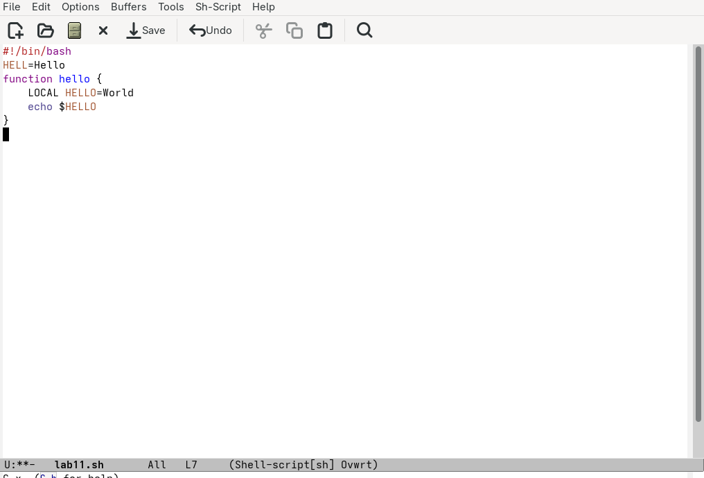
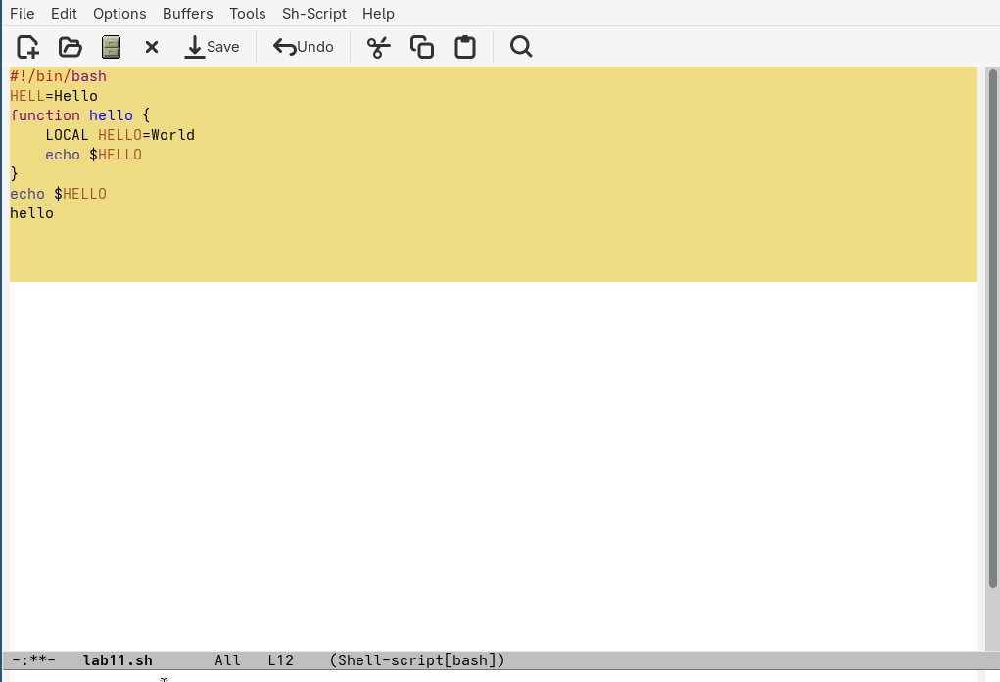
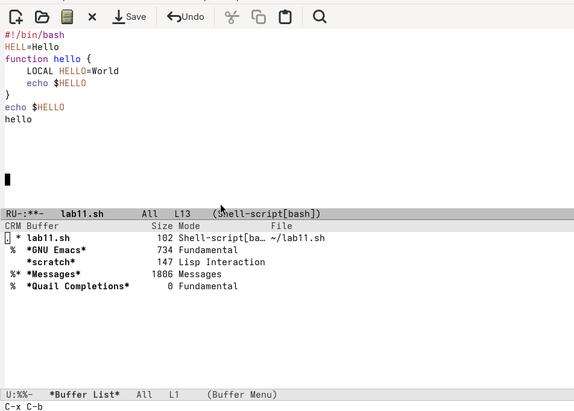
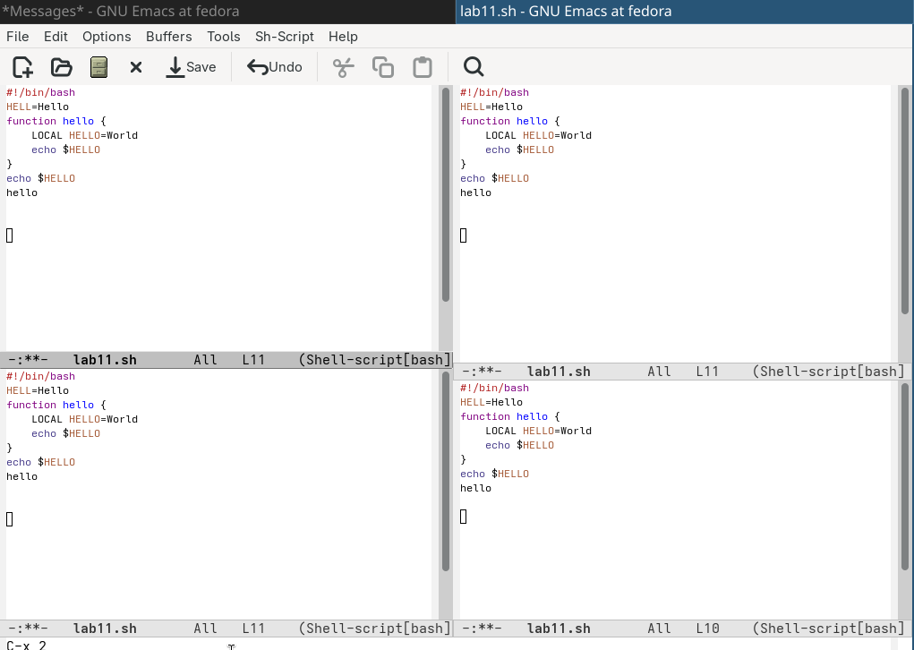

Цель
Познакомиться с операционной системой Linux. Получить практические
навыки рабо- ты с редактором Emacs.
Задание
- Открыть emacs.
- Создать файл lab07.sh с помощью комбинации Ctrl-x Ctrl-f (C-x
C-f).
- Наберите текст
- Сохранить файл с помощью комбинации Ctrl-x Ctrl-s (C-x C-s).
- Проделать с текстом стандартные процедуры редактирования, каждое
действие долж- но осуществляться комбинацией клавиш.
- Управление буферами.
- Управление окнами.
- Режим поиска
Выполнение лабораторной
работы
Через emacs пишу код.

Написание кода
Через
горячие клавиши редактирую программу. (рис. @fig:002)

редактирование программы
Перемещаю
открытое окно Ctrl-x со списком открытых буферов и переключаюсь на
другой буфер.(рис. @fig:004)

переключение буферов
Открываю
4 фрейма, пользуюсь поиском с заменой и поиском по регулярным
выражениям. (рис. @fig:005)

разделение фрейма на 4 части
Вывод
Мы Познакомились с операционной системой Linux. Получили практические
навыки работы с редактором Emacs.